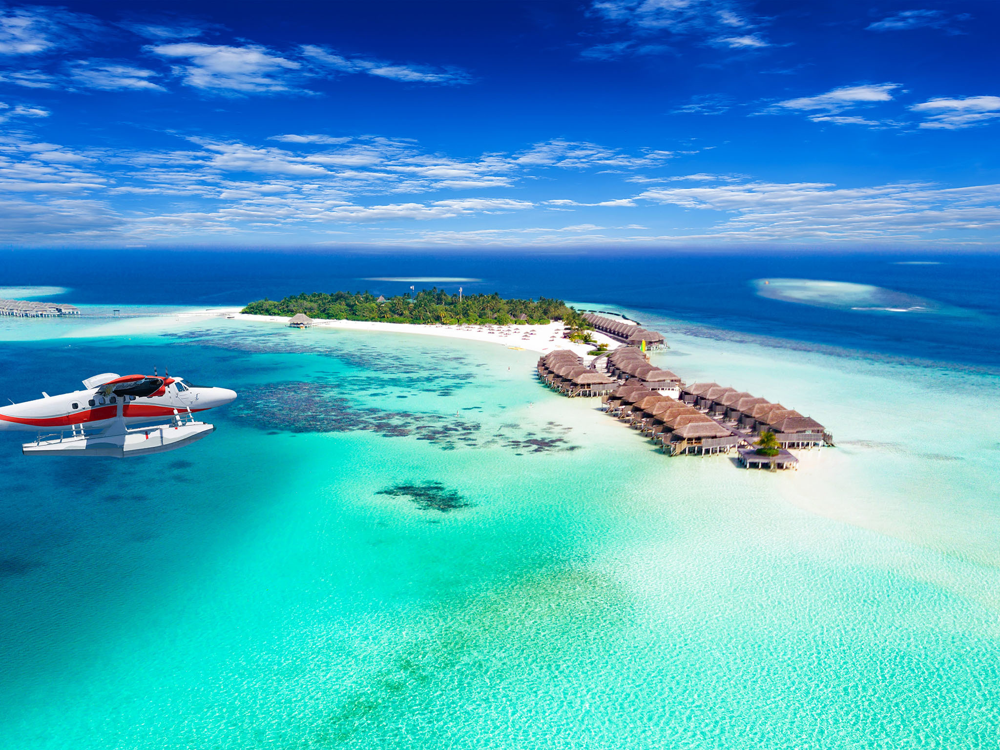

Best places to visit in Asia
Maldives
If your dream vacation involves pristine beaches, and crystal-clear waters the Maldives is an idyllic paradise.
With more than 1,100 islands (around 200 of which are inhabited), it’s a piece of heaven in the Indian Ocean

Tokyo, Japan
As one of the most populated cities globally, Tokyo is a whirlwind of neon-lit skyscrapers, bustling streets, and unique experiences.
Explore fun museums and holy sites like the Meiji Shrine or Sensoji Temple.
Bali, Indonesia
Bali’s lush jungles, rice terraces, and vibrant culture make it a favorite among travelers. Visit Ubud for art and spirituality, explore ancient temples,
and unwind on beautiful beaches
Hong Kong
A dynamic blend of East and West, Hong Kong boasts a stunning skyline, bustling markets, and delicious street food.
Take a tram up Victoria Peak for panoramic views of the city